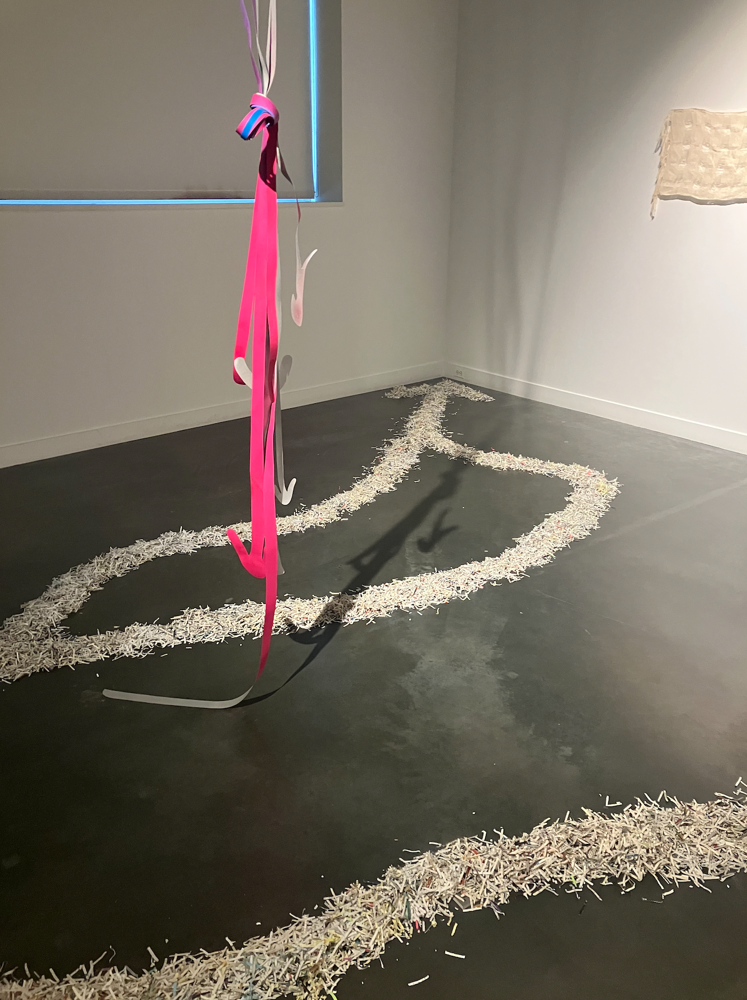

Paper Trail
(shredded notes, wood), developed with Echo Youyi Yan & Del Ziegman, was an installation in a space in 14 traces, a collaboration of happenings at the RISD Museum's Gelman Gallery curated by vida zamora.
A trail of shredded paper winds around the gallery. In many places the paper is loose, so the trail moves as people walk through or beside it. In other places, the trail rises on swellings of the floor that force people to walk around or over. The shifting shreds record traces of visitors interacting with subtle obstacles and implicit gallery conventions (don’t step on the art!!(?)).
reviewed by April Liu for WhiteHot Magazine

